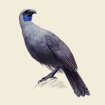

基礎コースを終え
作成できたこと
- ポップアップ表示
- カウントダウンタイマー
- 画像切り替え
- 繰り返しゲーム
画像切り替え
下に並んだ画像をクリックすると、大きな画像と入れ替わります。


- 
繰り返しゲーム
モンスターの体力は１００。
ATTACKボタンをクリックすると、30以下の
ランダムな数字がダメージとなり
モンスターの体力から差し引かれる。
100以上ダメージを与えると勝利！

感想
最初は、基礎コースで学んだことをどのように活かせば1つのものを
作成できるのか全くイメージできませんでしたが、最終的には
まがいなりにも１つのサイトを作成することが出来て、ようやく
プログラミングを駆使して１つのものを作成するイメージがつかめました。
それというのも優しく指導していただいたインストラクターの方々や、
支えてもらってばっかりでしたが一緒に走ってくださったFND17のメンバーの
みなさんのおかげです。本当にありがとうございます。
ここで出来た繋がりを大切にし、これからもプログラミングスキルに磨きをかけて行くつもりです。
フォローアップ期間中もどうぞよろしくお願い致します。